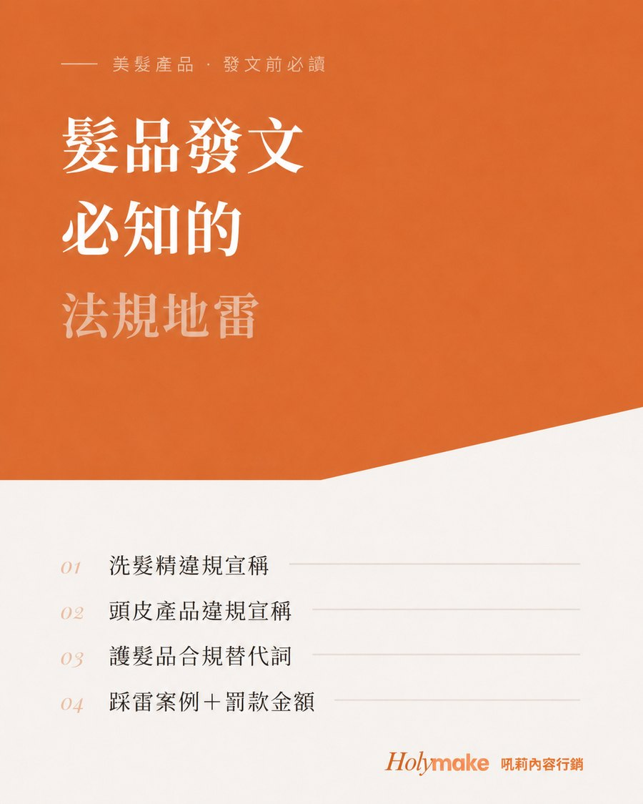
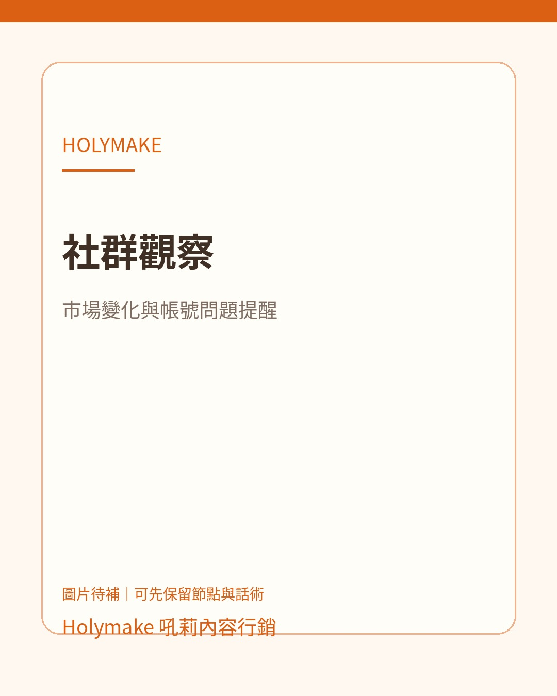
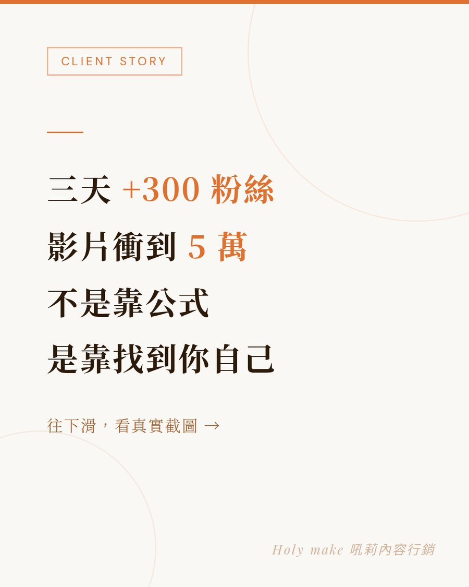
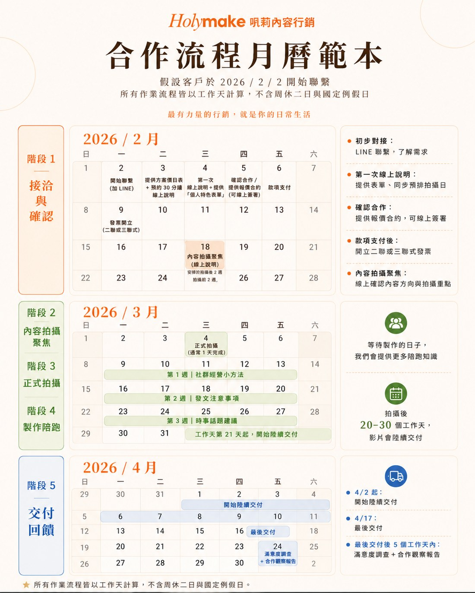
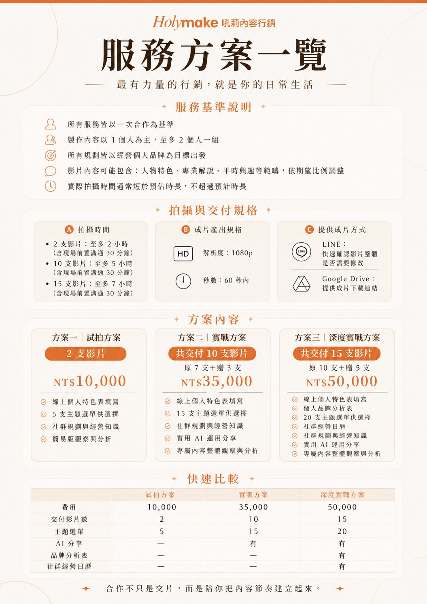

✦
Holymake吼莉內容行銷
把社群貼文
變成自然聊天的開門磚
月會分享用｜一起看看 Holymake 的 IG 內容，如何成為和店家開話題、拉近關係、延伸需求的小幫手。
這份資料想分享的一句話
Holymake 貼文不只是拿來轉發，更可以成為「有理由找客戶聊天」的小工具。
開口更自然破冰
延伸帶出需求
成交創造服務入口
Start Here
◎為什麼會有 Holymake？＋
Holymake 是從 RENATA 蕾娜塔髮品旗下的「短影音與社群內容規劃製作」延伸出來的社群內容服務。
不是另外多一個帳號而已
它是幫業務、髮廊客戶、想經營社群的人，提供更低門檻的內容靈感與品牌經營方向。
對業務的價值多一個能與店家討論社群、銷售、品牌形象的切入點。
對店家的價值不用再從零想主題，能看見「自己的日常也能變內容」。
☑分享給業務的使用小提醒＋
不用急著推
不要只像傳單
先聊出需求
每篇貼文可以這樣輕鬆運用：先丟一個客戶可能有感的觀察，再接一句「你們店裡會不會也遇到？」
老師，這篇我覺得你們店也會用得到。不是叫你現在一定要拍影片，而是你可以先看看，這個主題其實很適合拿來跟客人溝通。
可以參考的三個小步驟
先分享貼文 → 輕輕問店家有沒有遇到 → 如果對方有興趣，再延伸到社群內容、短影音或活動規劃。
Before Sharing
★先從社群吸客體質小測驗開始＋
互動入口｜先玩再聊
測驗負責打開話題，貼文負責延伸討論。
在分享 Holymake 的社群貼文前，可以先用這個小測驗，讓店家快速看見自己的社群狀態。它不是要評分高低，而是讓業務多一個輕鬆、自然、不尷尬的開場。
開始玩社群吸客體質測驗這個測驗可以先幫業務知道什麼？
1. 店家目前容易吸引哪一種客人
先看見店家的客群輪廓，後面比較好聊服務與產品搭配。
先看見店家的客群輪廓，後面比較好聊服務與產品搭配。
2. 店家適合拍什麼類型內容
不用一開始就問「你想拍什麼」，而是從測驗結果延伸。
不用一開始就問「你想拍什麼」，而是從測驗結果延伸。
3. 哪些髮品或服務比較容易自然推薦
把產品銷售放進店家的內容脈絡裡，而不是突然硬推。
把產品銷售放進店家的內容脈絡裡，而不是突然硬推。
4. 後續可以接哪一類 Holymake 貼文
測驗只是開頭，貼文才是讓對話繼續下去的素材。
測驗只是開頭，貼文才是讓對話繼續下去的素材。
老師，這個小測驗可以測看看你們店現在比較容易吸引哪一種客人。測完結果不一定要很認真，但可以當作我們下次討論社群內容或產品搭配的參考。
測完之後，可以接這三句
你覺得這個結果像你們店嗎？
你現在吸引到的客人，是不是你想要的客人？
如果要讓客人更懂你的服務，你覺得哪一類內容最適合先做？
測驗結果可以怎麼接到社群主題？
不知道適合發什麼可以接「主題規劃」，一起整理每月內容方向。
有發文，但內容方向不太穩可以接「社群觀察」，看看帳號是否受到平台變動或內容單一影響。
想推產品，但怕太業配可以接「發文注意事項」，討論產品推薦、功效文與銷售內容怎麼說比較安心。
想用新工具提升效率可以接「AI 運用」，聊 AI 如何做售後服務與髮型溝通輔助。
還不清楚 Holymake 是什麼可以接「品牌介紹」，讓對方知道這是 RENATA 延伸出的內容支援。
對短影音效果還在觀望可以接「個案紀錄」，用實際案例降低不安。
想做活動或跟上話題可以接「時事分享」，延伸到當月銷售活動與短影音內容規劃。
Content Series 系列主題
01品牌介紹｜先講清楚我們是誰＋
這個主題可以怎麼用介紹 Holymake 時，可以把它當成店家經營社群時多一個可以運用的支援資源。
IG 貼文預覽卡
前往 Instagram 查看完整貼文
這篇可以協助什麼？
適合第一次介紹 Holymake，或客戶問「你們現在是在做什麼服務？」的時候。
老師，這是我們 RENATA 旗下延伸出來的內容服務。因為很多店家都有社群經營需求，所以我們不只是提供髮品，也想協助你們把品牌跟服務被更多人看見。
可以帶給業務什麼？把銷售對話從「產品」升級到「店家經營」。
如果對方有興趣，可以再聊什麼？社群健檢、短影音服務說明、店家內容規劃。
02AI 運用｜用低門檻工具吸引客戶＋
這個主題可以怎麼用用低門檻、有新鮮感的 AI 話題，自然聊到售後服務、髮型溝通與內容效率。
IG 貼文預覽卡
前往 Instagram 查看完整貼文
這篇可以協助什麼？
適合想經營社群但覺得麻煩，或常遇到客人拿 AI 圖溝通髮型的店家。
現在很多 AI 內容，這篇不是叫你全部交給 AI，而是先用 AI 整理方向，再修成像你自己的語氣跟店裡內容。懂用 AI，也比較不怕客人拿 AI 圖來溝通髮型。
可以帶給業務什麼？用輕鬆、熱門、低門檻的工具打開話題。
如果對方有興趣，可以再聊什麼？AI 指令包、LINE@ 導流、AI 主題短影音規劃、運用 AI 做售後服務、髮型溝通「輔助」。
03發文注意事項｜用風險提醒建立信任＋
這個主題可以怎麼用用發文風險提醒建立信任，讓店家感覺你不只是介紹產品，也有幫他留意可能踩雷的地方。
IG 貼文預覽卡
前往 Instagram 查看完整貼文
Holymake
Holymake 吼莉內容行銷
發文注意事項｜貼文範例
•••

♡💬↗▱
holymake.tw 社群與廣告不能只追求吸睛。字眼、效果描述、前後對比、客戶見證都要更謹慎。
這篇可以協助什麼？
適合有發產品、推薦、發功效文，或還不熟悉法規風險的店家。
這篇給你參考，現在做社群或廣告不是只要吸睛就好。有些字眼、效果描述、前後對比、客戶見證都要注意，尤其之後如果有投廣告，更要先把方向抓穩。
可以帶給業務什麼？讓業務不只是介紹產品，也能用提醒風險的方式建立信任感。
如果對方有興趣，可以再聊什麼？一條龍短影音、社群內容製作、廣告前內容檢查。
04主題規劃｜解決不知道拍什麼＋
這個主題可以怎麼用協助店家從「不知道發什麼」，慢慢整理出每個月都可以經營的主題方向。
IG 貼文預覽卡
前往 Instagram 查看完整貼文
這篇可以協助什麼？
適合有經營意願，但每次都卡在不知道發什麼，不知道怎麼一致性經營主題的人。
老師你們做 IG 想主題會很難嗎？這篇給你參考，我們開始每個月整理重點，也有一些小乾貨。不是每個節日都要跟，而是讓你看到每個月其實都有很多內容可以延伸。
可以帶給業務什麼？很適合從自然聊天，延伸到店家的內容規劃需求。
如果對方有興趣，可以再聊什麼？當月內容企劃、檔期產品銷售活動、專屬主題月曆。
05社群觀察｜提醒帳號問題＋
這個主題可以怎麼用分享店家平常不一定會注意到的社群變化，讓對方感覺你有在幫他留意市場動態。
IG 貼文預覽卡
Holymake
Holymake 吼莉內容行銷
社群觀察｜圖片待補
•••

♡💬↗▱
holymake.tw 提醒店家：客人現在不只看作品，也看個性、服務過程、溝通方式與專業感。
這篇可以協助什麼？
適合有在發文，或只固定發作品照的店家。
老師你們最近有發生這些事嗎？這些社群上最近在變動，你們可能也看看自己的帳號有沒有被影響，如果有或沒有都可以看看遇到了要怎麼應對比較好的參考。
可以帶給業務什麼？讓客戶覺得你有在幫他注意到沒有想到和平常不會注意的事情。
如果對方有興趣，可以再聊什麼？互動遊戲、社群內容優化、帳號定位調整。
06時事分享｜用熱門話題自然破冰＋
這個主題可以怎麼用用時事與節慶話題輕鬆破冰，再自然延伸到活動、產品與短影音內容規劃。
IG 貼文預覽卡
這篇可以協助什麼？
適合平常比較難開口、但可以用熱門話題輕鬆破冰的客戶。
最近這個話題蠻多人在討論，我覺得其實也可以轉成店裡的內容。不是硬跟風，而是用大家正在注意的事情，帶出你們店的服務或觀點。
可以帶給業務什麼？讓業務多一個自然、不尷尬的理由重新開啟對話。
如果對方有興趣，可以再聊什麼？當月銷售活動規劃、短影音內容規劃、節慶檔期銷售內容。
07個案紀錄｜用成果降低懷疑＋
這個主題可以怎麼用用實際成果降低客戶懷疑，讓店家看見短影音與社群內容是可以被規劃出效果的。
IG 貼文預覽卡
Holymake
Holymake 吼莉內容行銷
個案紀錄｜貼文範例
•••

♡💬↗▱
holymake.tw 三天增加 300 粉絲、影片衝到 5 萬，不是靠公式，是靠找到自己的內容特色。
這篇可以協助什麼？
適合觀望型客戶，尤其是覺得「拍短影音真的有用嗎？」的人。
老師，這篇你可以看一下，它不是單純拍好看的影片，而是把一個人的服務特色整理出來，讓客人比較容易記得你。
可以帶給業務什麼？面對還在觀望的客戶時，可以用實際案例讓對方更安心。
如果對方有興趣，可以再聊什麼？短影音一條龍、個人品牌內容規劃、服務特色整理。
Sales Flow
$這些內容，可以幫業務什麼？＋
真正的價值，不只是多一篇貼文可以轉發，而是讓業務多一個自然關心客戶、延伸需求、創造合作機會的話題入口。
1. 讓客戶感覺你有在幫他想不是只有產品、價格、活動，而是也會分享店家經營社群、溝通客人、規劃內容時可能用得到的資訊。
2. 讓產品銷售變得更自然當客戶正在思考檔期活動、服務推廣、社群內容時，業務就能更自然地帶出適合的產品、課程或活動規劃。
3. 讓下一次聯繫更有理由有內容可以分享，就有更多機會重新開啟對話。不是硬問「最近要不要補貨」，而是用有幫助的內容先建立互動。
4. 讓 Holymake 成為業務的支援工具如果店家剛好需要短影音、社群內容或主題規劃，業務可以把 Holymake 當成一個可以協助客戶的後端資源。
Service Support 服務支援
S1服務流程｜合作怎麼進行＋

S2服務方案｜可以怎麼選＋
